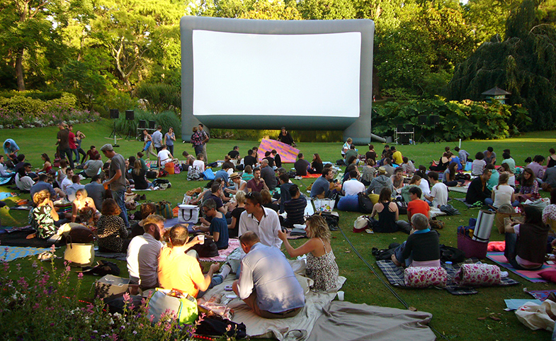

Association

Grande nouveauté cette année, la Ville de paris organise “Les séances de films en plein air” dans le park Monçeau.
C’est l’occasion de découvrir six films étonnants dans un cadre atypique et une ambiance décontractée. La programmation n’a pas été choisie au hasard… elle nous montre qu’entre le 15eme arrondissement et le 7e art, il y a des atomes crochus ! Rendez-vous chaque soir du 5 au 8 Mars pour de nouvelles séances gratuites, ouvertes à tous.
Du 5 au 8 Mars,
Projection de 18h à minuit environ.
200 chaises longues à disposition
Park Monçeau

le parc Georges-Brassens se trouve dans le 15e arrondissement de Paris sur l'emplacement des anciens abattoirs de Vaugirard. Ouvert en 1985, il couvre une superficie de 8,7 hectares sur un terrain en dénivelé qui abritait au xviiie siècle le vignoble de Périchot1.
Le parc Georges-Brassens a été aménagé à la place du marché aux chevaux de Vaugirard et de ses abattoirs et a été ouvert en 1984. De l'ancien marché ont été gardés les portes monumentales (ornées d'un taureau) et deux bâtiments. Une partie du parc est consacrée à un « jardin de senteurs ». Une sculpture d'Albert Bouquillon orne le parc.
À côté du rucher, les pieds de vigne de cépage pinot noir encore exploitées3 en haut de la colline rappellent les anciens vignobles de Périchot du xviiie siècle. La vigne de 1 200 m2, comporte 700 pieds, soit la deuxième en importance dans Paris. Le vin, produit sous l’appellation « Clos des Morillons », mis en bouteilles de 50 cl, est vendu aux enchères publiques à la mairie du 15e arrondissement. Le produit de la vente est versé à des œuvres sociales de l'arrondissement. La vinification, la mise en bouteilles et l'élevage du vin se font dans les sous-sols de l'ancienne mairie de Grenelle, située place du Commerce.
Le théâtre Silvia-Monfort jouxte le parc et, près de l'entrée de la halle aux chevaux, se trouve un théâtre de spectacles de marionnettes. Un marché du livre ancien et d'occasion se tient toutes les fins de semaine depuis 1987 dans l'ancienne halle aux chevaux.
Le parc est décoré de deux statues animalières (L'Âne de François-Xavier Lalanne, et Les Taureaux4 d'Isidore Bonheur, transférées du Trocadéro5), du Porteur de viande d'Albert Bouquillon en référence aux anciens abattoirs de Vaugirard et d'un buste de Georges Brassens d'André Greck.
La partie sud du parc est coupée par la tranchée de la Petite Ceinture, en cours d'aménagement en promenade plantée.
News

Bonne nouvelle, la ville de Paris a acté l'autorisation à notre association d'organiser au park Monceau le festival de Film en plein air. Du 5 au 8 Aout, se tiendrons dans l'esplanade du Park des projections de films d'auteurs, de 18h à 00h. pour y participer, c'est très simple: reservez gratuitement votre pass en en remplissant le formulaire de réservation.
Guest-Star
au cour de ce festival seront présent des acteurs amateurs et de renom, ainsi que le célèbre réalisateur hollywoodien Samuel Jackson